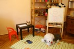

Játékterápia
 A gyermek életkorától és problémájától függően a spontán játékkezdeményezéstől a konkrét „játék-tesztekig” többféle lehetőséggel dolgozom. A módszer lényege, hogy a gyermek projektív módon jeleníti meg a játékai, rajzai során azokat a problémákat, melyeket vagy aktívan megél vagy rejtetten hordoz a tudatalattijában. Minden esetben feszítik ezek a gondok, szívesen veszi, ha megkönnyebbülhet tőlük.
Iskolai kudarcok, társas kapcsolati zavarok, családi gondok, fokozott szorongás valamitől (pl. sötétség) magatartászavar stb. esetén a játékterápiák segítségével nemcsak az okra jöhet rá a szakember, de a korrektív élmény megtapasztaltatására is törekszik.
A gyerekek szívesen vesznek részt ebben az egyszemélyes, csak rájuk figyelős helyzetben, és örülnek a bizalmas kapcsolatnak.
Fontos a családdal, iskolával való kölcsönös együttműködés, mert ez mindig megalapozza a jó eredményt.
Baba-mama konzultáció és terápia
Speciális helyzet az un. baba-mama konzultáció, melyre a
- szülő fokozott aggódása
- a szülő bizonytalansága
- a gyermek rossz evése
- túlzott sírása
- hasfájása
- rossz alvása
és még sok egyéb, a szülő(k) számára nyugtalanságot okozó tünet miatt kerülhet sor.
Gyakran a szoptatási időszakban kérik a segítséget.
A rendszeres találkozások alkalmával a baba-mama minden esetben együtt jönnek, de lehetőség szerint a papa is jelen van. Mindenki kommunikál egymással, és a babával. A pszichológussal beszélgetve ő a helyzetet közvetett értelmezésekkel irányítja, miközben látja a baba és a szülők egymás iránti reakcióit, együttműködésüket.
Súlyosabb probléma esetén a kezelés nem az édesanya, hanem egy másik családtag kérésére is indulhat. Ekkor az eredmény elérése erősen függ az édesanya együttműködésétől, kezelhetőségétől.
Szülőkonzultáció
Speciális helyzet, ha a gyermek nélkül történik az un. szülőkonzultáció. Ekkor a gyermek nélkül találkozom a szülővel. Ez esetleg csak egy vagy néhány alkalmas beszélgetést jelent, ahol a szülő mondja el a gyermekkel kapcsolatos problémáit, bizonytalanságait. A helyzetet elemezve igyekszem rávezető magatartásommal segíteni őt, hogy jobban átgondolja a bajokat, azok esetleges gyökereit. Újabb okokra hívhatom fel a figyelmét, a család szerepét a tünetek keletkezésében és enyhítésében. Ő mérlegeli a jobbítás lehetőségeit, és ugyanakkor tanácsokat is kap. Ezután kontroll-szerűen találkozunk a megegyezésünk szerinti időszakokban.
Tinédzser-ügyelet
A tinédzser-ügyelet egy londoni minta alapján kidolgozott un. 4+1 üléses konzultáció. Ekkor a tinédzser egyedül keres fel (előtte esetleg a szülővel egyeztet). Ebben az esetben csak a tinédzserrel dolgozom. A szülő csak veszély esetén vonódik be, és akkor is a kamasz tudtával ugyan, de először csak velem kommunikál.
A kamaszok, a fiatal felnőttek (18-20 évesek) leggyakoribb problémái a leválásból adódó érzelmi ambivalencia, az önállóságra és függetlenedésre törekvés nehézségei. Párkapcsolati, életvezetési, családi gondjaik vannak, sokszor zaklatottak emiatt. A kortársaikkal folytatott beszélgetések sok esetben csak enyhe, átmeneti megkönnyebbülést jelentenek. Kölcsönös bizalom esetén szívesen együttműködnek a semlegességet képviselő szakemberrel.
Analitikusan orientált, dinamikus verbális terápia
A pszichoanalízis alapelveit felhasználva, de szemtől-szemben ülő helyzetben történik. A kliens által hozott probléma és az ehhez kapcsoló asszociációi adják e „beszélgetős” módszer anyagát. Mindenki életében adódnak olyan negatív élmények, melyeket akár korai életkorában, akár felnőttként élt át, de a kínzó érzések miatt elfojtotta azokat. Az ilyen tudattalan tartalmak összefonódása komolyabb elakadásokat okozhat a személyiségfejlődésében, és később neurotikus tünetet okozhat.
Együttműködésünk során a kliens egyéni megküzdése nagyon fontos, a terápia eredményessége nagyban ettől függ. Nem kapja készen a megoldást, meg kell érte dolgoznia, így tehát ő a főszereplő. Szinte mindig ő beszél, minden ülés általában az aktuális problémája megemlítésével kezdődik, majd boncolgatásával, az ok vagy okok keresgélésével folytatódik. A folyamatosság is biztosítva van, hisz vissza-visszatér az eddig elmondottakhoz, hogy azokon ismét elgondolkozzon. A kliens érzi a terapeuta intenzív figyelmét, tudja hogy minden fontos, ami eszébe jut, amit álmodik, minden amit mond jelentőséggel bír, érti az őszinteség lényegét. A terapeuta értő figyelme és jelzései mellett dolgozik azért, hogy minél jobban megismerje önmagát, és cselekedeteinek mozgatórugóit. Fontossá válik számára, hogy egy-egy eseményt többszöri elmondása után már másként értékeljen, meglássa benne az általa elkövetett „hibákat”, és ezekből tanulván alaposabb önismeretre tegyen szert. A jövőbeli cselekedeteinél kamatoztatni tudja már megszerzett előrelátó képességét, önismeretét. Így jobban elkerülheti a frusztráló helyzetekbe, és ezzel életvitelét nyugodtabbá, érzelmileg kiegyensúlyozottabbá teheti.
Az ülés heti rendszerességgel, ugyanazokban az időpontokban zajlik.
Hipnózis -NLP
A hipnózis módosult tudatállapotban zajló pszichoterápia. Sokan még ma is misztikus vonásokkal ruházzák fel, azonban ez a módszer nagyon is emberközeli és eredményes gyakorlati technika mind pszichés, mind testi tünetek esetén. Fontos tudni, hogy bár a kliens felett érvényesül a pszichoterapeuta kontrollja, azonban a paciens csak olyan cselekedetre vehető rá, amit ő is akar, tehát normarendszerével összeegyeztethető.
A kliens legtöbb esetben relaxált állapotban, fokozott magárafigyeléssel követi a terapeuta indukcióit. Imaginációi nem csak a traumák feltárására, de a gyógyításra és az önismeret fejlesztésére is jól használhatóak. A korrektív élmények segítségével feldolgozhatóak, átkeretezhetőek a kínzó élmények.
Más esetekben az aktív-éber hipnózist használva fokozható a teljesítmény kapacitása. Így a tanulási deficitek, impotenciák megszüntetésére, az önbizalom erősítésére alkalmas.
Mindkét esetben szívesen használom a szimbólikus képeket (pl. KIM), és a neurolongvisztikai programozás nyújtotta modern technikát is. (NLP)
Analitikusan orientált terápiás módszer a hipnózis is. Az ott leírtaktól lényegesen abban különbözik, hogy a pszichoterapeuta az un. rapport tapasztalataiból kiindulva az aktuális problémát illetően konkrétabb vezetést kezdeményez, valamint a fent említett kontrollja célirányos.
Az NLP segítségével erőforrásainkat mozgósíthatjuk bizonyos célok elérésében, esetleges félelmeink, bizonytalanságaink leküzdésében. Határozottabbakká, magabiztosabbakká válhatunk általa, ami segítheti munkánkat, terveink végrehajtását. A lényege az, hogy ha megváltoztatjuk „mentális programjainkat”, megváltoztathatjuk viselkedésünket is.
Vissza a lap tetejére

|